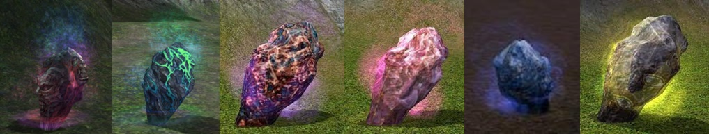
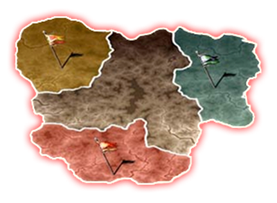

Nosso servidor consiste em relembrar da melhor época do Mt2
Historia do Metin2
Durante muito tempo o sopro do Deus Dragão tem tomado conta dos Reinos Shinsu, Chunjo e Jinno Mas este fascinante mundo de magia enfrenta uma terrível ameaça: A queda das Pedras Metin não só causou profundas feridas no continente inteiro, como espalhou o caos e a destruição em todas as terras e os seus habitantes. A Guerra rebentou entre os Reinos, os animais selvagens transformaram-se em bestas ferozes e os mortos voltaram a caminhar, sedentos de sangue. Combate a negra influência das Pedras Metin como um dos aliados do Deus Dragão. Fortalece-te e empunha as tuas armas para salvares o teu Reino de um futuro repleto de medo, sofrimento e destruição!
O aparecimento das pedras Metin
O surgimento destas rochas misteriosas com influências malignas, conhecidas como pedras de Metin prejudicaram toda uma nação. Uma nação que um dia foi forte e unificada, construída com a base de seus ancestrais: o Império Antigo.
Esta nação, porém teve seu declínio por causa das pedras de Metin. As rochas modificaram todas as coisas conhecidas como o clima e a configuração da própria terra. Animais, que antes eram mansos, começaram a atacar os moradores e estranhas criaturas começaram a surgir.

O rompimento dos três reinos
O rompimento dos tres reinos Por causa das pedras de Metin, o Império Antigo foi dividido em três reinos, e as guerras entre eles acontecem com freqüência. Os reinos são:
Reino Shinsoo
Este império foi estabelecido por comerciantes nas praias ao sul do continente. Os comerciantes construíram sua própria linha de defesa, dispondo de suas propriedades.
Reino Chunjo
Este império foi estabelecido pelo primo do imperador do Império Antigo. Seu objetivo é neutralizar o poder das pedras de Metin pela unificação dos três impérios
Reino Jinno
Este é um império de características militares legitimadas herdeiro real do Império Antigo. Seu objetivo é a unificação do continente através de sua cultura agressiva.

O que está para aconter !
Uma batalha terrível está na eminência do acontecimento. As nações querem destruir as pedras de Metin, e ao mesmo tempo existe o conflito pela conquista de território. Você está no centro desta batalha! Será lembrado como um herói ou derrotado nos campos de batalha? Faça adormecer este conflito que já dura séculos e unifique o continente. Batalhe com esta pedra maligna se unindo ao Deus Dragão. Será você o salvador desta terra em conflito que irá receber a benção da Terra e do Céu?
A morte da Deusa trouxe consequências terríveis. Um longo e cruel inverno congelou o mundo dos humanos. E até os deuses sofreram. Beran-Setaou afastou-se e procurou a solidão quando a gravidade da sua ação o atingiu. O seu irmão Baljit-Elvedin chorou a morte da sua irmã durante um longo tempo, até que partiu em busca do seu irmão. Quando o encontrou na Gruta um combate incrivelmente violento teve lugar entre os dois irmãos e nenhum conseguia obter vantagem sobre o outro. No entanto, Baljit-Elvedin conseguiu selar a Gruta e regressar ao mundo dos humanos. Desde então tem zelado pela terra e todas as criaturas que nela habitam, desde que não pertençam ao lado das trevas. A localização da gruta, desde então conhecida como Gruta das Almas, é conhecida apenas por muito poucas pessoas - e essas pessoas mantêm a localização em segredo. O dragão negro governa o submundo e todos aqueles que nele habitam. Ele carrega um ódio tremendo por todos os seres vivos. E todos aqueles que se cruzarem no seu caminho irão sentir a fúria.